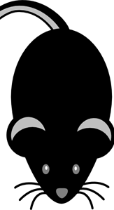
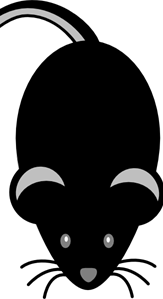

DEZINSECTIE
Operatiunile de dezinsectie vizeaza insectele zburatoare, taratoare si parazite. Dezinsectia se face prin pulverizare solutie lichida ce consta in utilizarea substantelor pesticide de ingestie si contact, pentru combaterea insectelor adulte si a larvelor. Substantele se vor aplica printr-o pulverizare completa a tuturor ascunzisurilor, cat si a tuturor celorlalte locuri unde pot aparea insecte. Daca ascunzisurile nu sunt accesibile, se va pulveriza o zona de bariera în jurul acestora.
Activitatea de dezinsectie se aplica in:
- Cladiri si terenuri care apartin domeniului public si privat.
- Unitatile de alimentatie publica, cladirile administrate de autoritatile publice locale, judetene sau guvernamentale.
- Unitatile de invatamant, sanitare si cele de cultura.
- Parti comune ale cladirilor tip condominii (casa scarii, poduri si subsoluri).
- Gospodarii individuale (case – spatii deschise).
- Camine aferente retelelor de alimentare cu apa, canalizare, termoficare.
- Parcuri, spatii verzi, cimitire, maluri de lac, oboare, strazi, aliniamente stradale, trotuare, targuri, piete publice.
- Zone demolate si neconstruite.
- Spatiile special amenajate pentru colectarea deseurilor menajere.
- Depozitele de deseuri municipale si cele asimilate acestora.
In functie de natura si scopul ei, dezinsectia poate fi executata cu scopul de prevenire in rolul de impiedicare a aparitiei si raspandirii insectelor daunatoare, cat si cu scopul de eliminare, avand drept rol distrugerea definitiva a insectelor dintr-un spatiu infestat. O operatiune de dezinsectie este ineficienta si chiar contraindicata in vecinatatea unor spatii infestate, in astfel de cazuri fiind de recomandat eliminarea intregului focar de infestare printr-o dezinsectie curativa asupra zonei infestate.
Dezinsectia este de doua feluri:
Dezinsectie preventiva (profilactica) care are ca obiectiv reducerea la minimum a elementelor favorabile dezvoltarii larvelor si a posibilitatii de acces a insectelor adulte spre hrana. Aceasta are caracter permanent si este indicat sa fie facuta odata la 3 luni.
Dezinsectie curativa (de combatere)- se constituie din actiuni de combatere in focar, scopul fiind de distrugere rapida a daunatorilor. Are caracter ocazional, in functie de necesitate. Se recomanda efectuarea la intervale repetate de 10-14 zile, fiind urmata apoi de dezinsectia profilactica.